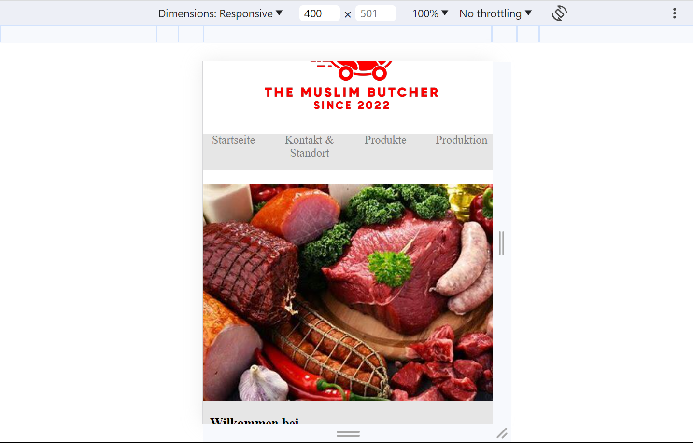

Webseiten mit HTML und CSS
Gründe ein eigenes Unternehmen mit einer ausgefallenen Idee, programmiere dazu eine Website und stelle die Firma dann bei "Die Höhle der Löwen" vor.
HTML
HTML oder Hypertext Markup Language (Hypertext-Auszeichnungssprache) ist eine Auszeichnungssprache (Computersprache). Auf HTML-Dateien basiert das World Wide Web (WWW). Mit HTML kann man eine Vielzahl von Dingen realisieren, und es bildet die Grundlage einer Webseite. Hier einiges das man mit HTML machen kann:
- Textformatierung
- Bilder einbinden
- Links erstellen
- Listen erstellen
- Tabellen erstellen
- Formulare
- CSS einbinden
- JavaScript integrieren
Mit HTML, CSS und JavaScript, die zusammen verwendet werden, kann man eine Vielzahl von Möglichkeiten auf einer Website realisieren. Die meisten Websites im Internet bestehen aus dieser Kombination, wobei HTML stets die Grundlage bildet.
CSS
CSS (Cascading Style Sheets) ist eine Stylesheet-Sprache, die in HTML eingebunden wird, um die Darstellung von HTML-Inhalten zu gestalten. CSS wurde entwickelt, um die Trennung zwischen dem Inhalt und der Darstellung eines Dokuments zu ermöglichen und dadurch die Übersicht und Wartbarkeit zu verbessern. Mit CSS kann man:
- Farben und Hintergründe
- Textformatierung
- Layout
- Responsives Design
- Flexbox und Grid
- Barrierefreiheit
CSS ist sehr vielseitig und ermöglicht dem Programmierer viele Möglichkeiten, die Website nach seinen Vorgaben oder Vorstellungen zu gestalten.
Fazit
Ich fand das Thema dieser Woche sehr spannend, und ich habe einiges Neues gelernt, sowie mein Wissen aus der 10. Schuljahr aufgefrischt. In Bezug auf die Aufgaben gibt es diese Woche nichts, worüber ich mich beschweren könnte.